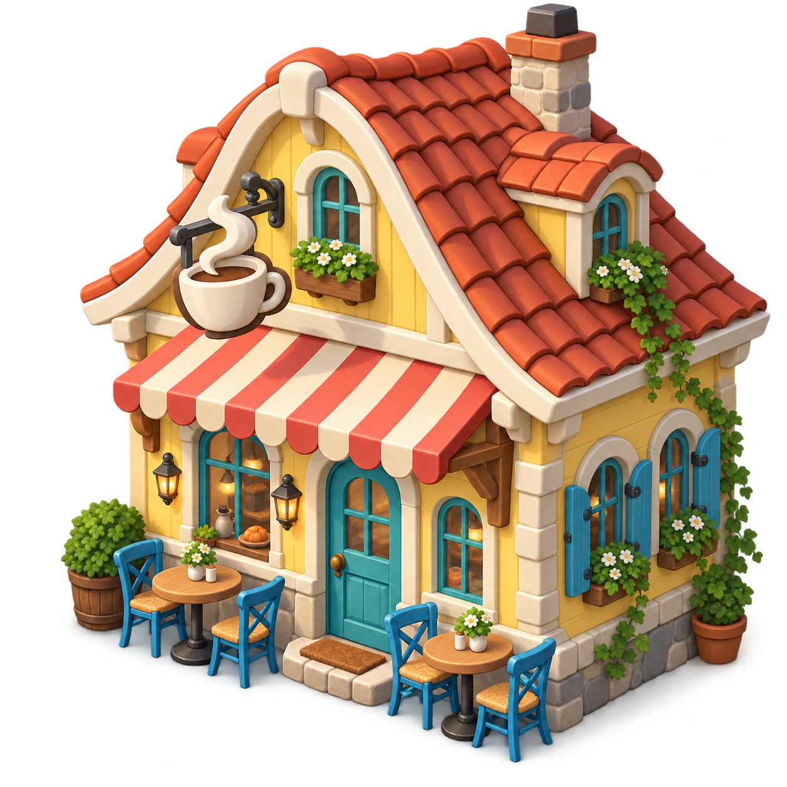

Et spil om både, byggeri og livet ved vandet
Havnekaptajnen er SejlStrøms gratis browserspil med en levende havn, værksted, produktion og sejlads. Spillet udvikles primært til voksne og unge fra 16 år. Det er en målgruppe, ikke en oplysning om verificerede spilleraldre.
Vi er åbne for relevante annoncører inden for bådudstyr, havne, sejlsport og oplevelser ved kysten. Alle samarbejder vurderes og aftales særskilt.

Tre mulige placeringer
- Banner ved spillet: Logo, kort budskab og link over havnen.
- Værkstedet: En mærket annonce i forbindelse med det generiske bådudstyr.
- Kaptajnsbogen: En annonce ved historik og spiloplysninger.
Der står altid “Reklame” og annoncørens navn. Annoncer ligner ikke spilopgaver, og klik eller køb hos en annoncør giver ingen spilbelønning. Vi afbryder ikke sejladsen med pop op-reklamer.
Materiale til en pilot: logo som PNG, SVG, WebP eller AVIF, overskrift på højst 45 tegn, kort beskrivelse og én HTTPS-webadresse. Annoncøren skal have rettigheder til materialet. Vi tilpasser den synlige størrelse til telefon og computer og aftaler visningen før start.
Et ærligt udgangspunkt
Spillet er under udvikling. Der er endnu ingen betalende eksterne annoncører, og vi offentliggør ikke udokumenterede spiller- eller trafikstal. Vi garanterer ikke rækkevidde, klik eller salg.
Den nuværende version måler hverken annoncevisninger eller klik og bruger ingen personlig målretning, annoncecookies eller eksterne annoncenetværk. En første aftale kan derfor handle om en fast, aftalt placering og periode, ikke en lovet mængde visninger. Reklamefri spillere vil ved en senere lancering ikke se annoncerne.
Pris, periode, placering, eventuel kategori-eksklusivitet, godkendt materiale, ophør og fakturering skal aftales skriftligt før en annonce går live. En henvendelse her indgår ingen aftale.
Tal med SejlStrøm
Send gerne virksomhedens navn, webadresse, ønsket periode og hvilket produkt eller tilbud, I vil fortælle om. Undlad personfølsomme oplysninger.
SejlStrøm · CVR 46142454
Fjællebrovejen 81, 5600 Faaborg · +45 42 45 52 02
shop@sejlstroem.dk